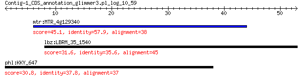

bitscore colors: <40, 40-50 , 50-80, 80-200, >200
 BLASTP 2.2.31+
Reference: Stephen F. Altschul, Thomas L. Madden, Alejandro A.
Schaffer, Jinghui Zhang, Zheng Zhang, Webb Miller, and David J.
Lipman (1997), "Gapped BLAST and PSI-BLAST: a new generation of
protein database search programs", Nucleic Acids Res. 25:3389-3402.
Reference for composition-based statistics: Alejandro A. Schaffer,
L. Aravind, Thomas L. Madden, Sergei Shavirin, John L. Spouge, Yuri
I. Wolf, Eugene V. Koonin, and Stephen F. Altschul (2001),
"Improving the accuracy of PSI-BLAST protein database searches with
composition-based statistics and other refinements", Nucleic Acids
Res. 29:2994-3005.
Database: all_orgs
14,240,465 sequences; 5,121,972,263 total letters
Query= Contig-1_CDS_annotation_glimmer3.pl_log_10_59
Length=52
Score E
Sequences producing significant alignments: (Bits) Value
mtr:MTR_4g129340 hypothetical protein 45.1 2e-04
lbz:LBRM_35_1540 hypothetical protein 31.6 7.3
phl:KKY_647 putative glutathione S-transferase-related transmem... 30.8 8.3
> mtr:MTR_4g129340 hypothetical protein
Length=303
Score = 45.1 bits (105), Expect = 2e-04, Method: Compositional matrix adjust.
Identities = 22/38 (58%), Positives = 26/38 (68%), Gaps = 0/38 (0%)
Query 6 DSQDVGLEAAIIERKRNSSLVESACAEDVTGLNHAPKL 43
DSQ+V LEAA +ER RNSSL+E +CAED G P
Sbjct 239 DSQEVCLEAATLERVRNSSLIERSCAEDERGCQVLPSF 276
> lbz:LBRM_35_1540 hypothetical protein
Length=450
Score = 31.6 bits (70), Expect = 7.3, Method: Compositional matrix adjust.
Identities = 16/51 (31%), Positives = 32/51 (63%), Gaps = 9/51 (18%)
Query 8 QDVGLEAAIIERKRNS------SLVESACAEDVTGLNHAPKLRQRHVGVVG 52
+DV ++AA IER+ NS +++++ A+D++ + H RQ H+ ++G
Sbjct 204 EDVNMQAAAIERQANSEKARLDTVLQAQAAQDLSNVEH---YRQDHMDLIG 251
> phl:KKY_647 putative glutathione S-transferase-related transmembrane
protein
Length=163
Score = 30.8 bits (68), Expect = 8.3, Method: Composition-based stats.
Identities = 14/37 (38%), Positives = 21/37 (57%), Gaps = 0/37 (0%)
Query 1 MWEGPDSQDVGLEAAIIERKRNSSLVESACAEDVTGL 37
+W GPD Q +GL+ E +R S LV + +D G+
Sbjct 68 VWSGPDGQSMGLKGIFHEVERPSRLVTTETFDDDFGM 104
Lambda K H a alpha
0.314 0.131 0.385 0.792 4.96
Gapped
Lambda K H a alpha sigma
0.267 0.0410 0.140 1.90 42.6 43.6
Effective search space used: 128680937226